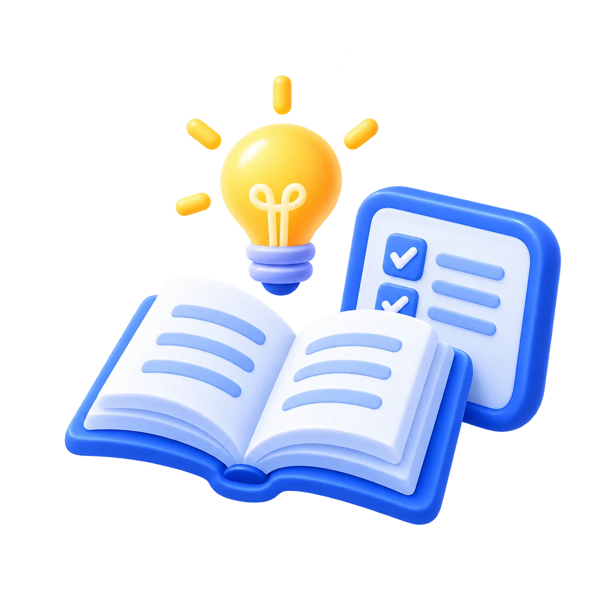
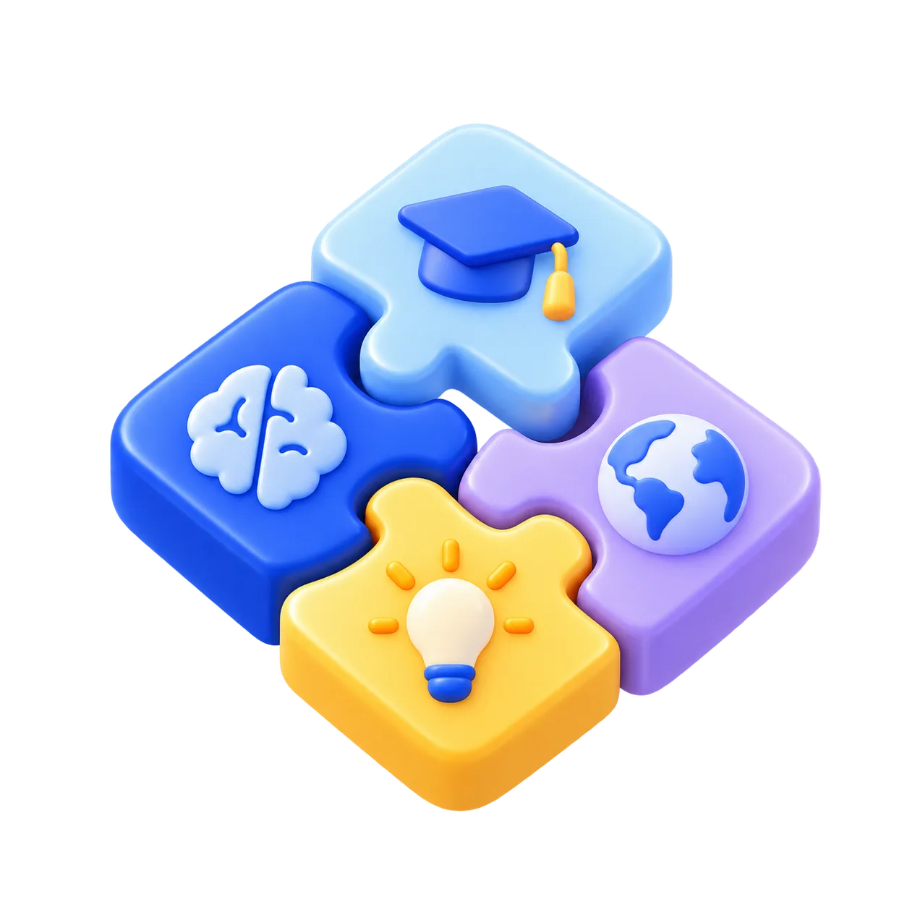
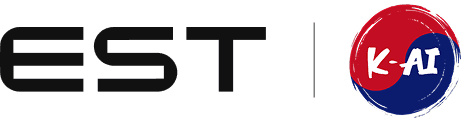
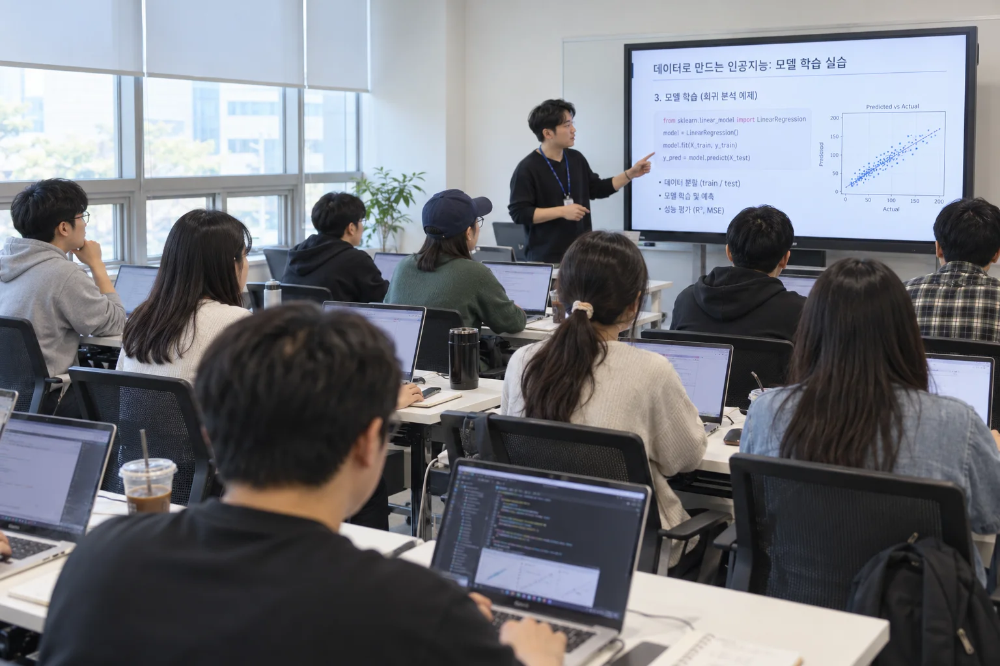
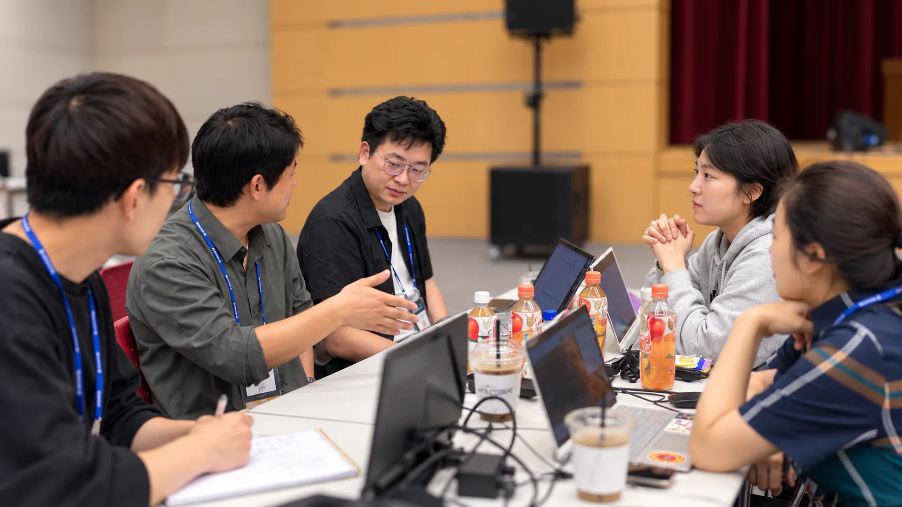
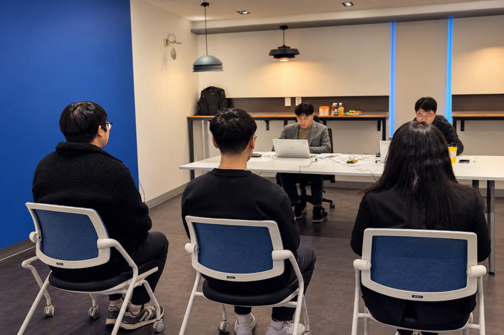

LEARN DEEPLY. BUILD YOUR NEXT.
인공지능사관학교
인사교 알아보기 / A TO Z처음의 막막함이,
MADE IN GWANGJU.깊이 배우고.처음의 막막함이,
내일의 실력이 되도록.
무엇을 배우고, 누구와 만들고,
어떤 일을 준비하는지. 차근차근 알아봐요.
함께 만들고.
더 멀리 나아가요.
기초 학습부터 실전 프로젝트까지
교육 과정 살펴보기
인사교를 알아보세요
교육 과정 살펴보기
인사교, 어떤 곳인가요?
인사교는 AI를 배우고 직접 만들어 보고 싶은 청년을 위한 학교예요.
AI 기초부터 모델링, 서비스 개발, 플랫폼·인프라까지 배우고,
직무·산업별 수업에서 배운 기술을 어떻게 쓰는지 익혀요.
기업 연계·실증·창업 프로젝트로 여러분의 아이디어를
실제로 작동하는 서비스로 만들어 봐요.
청년들의 배움이 실제 일자리로 이어지고,
AI 생태계가 꾸준히 성장하는 것이 인사교가 꿈꾸는 모습이에요.
AI 인재 양성의 중심, 인공지능사관학교에서 함께해요.
대기업 하반기 채용 본격화…“AI 활용한 문제 해결 능력 중시”
기업 80% 이상 “AI 인재 필요”… ‘AI 박사’ 아닌 ‘데이터 읽는 실무자’ 원해

체계적인 학습 관리
수도권·광주 교육기관의 교육 경험을 바탕으로, 스마트 교육 플랫폼에서 학습 과정을 차근차근 관리해요.
토론·실습·발표
팀원들과 의견을 나누고 직접 실습해요. 배운 내용은 발표하면서 정리해 봐요.

분야별 실무 교육
여러 산업의 문제에 AI를 적용해 봐요. 어떤 문제를 풀지 정하고, 직접 기획하고 만들어 봐요.
관련 기관
교육에 함께하는 기업과 기관
인공지능사관학교
AI 교육 · 프로젝트 · 취업 지원

이스트소프트
AI 선도기업의
실무 기술과 경험네이버클라우드
AI와 클라우드를
연결하는 기술스마트인재개발원
쌓아 온 교육 경험과
취업 지원 노하우한국인공지능·
소프트웨어산업협회AI·SW 산업의
경험과 네트워크
지원 대상
어떤 사람에게 적합한지?
만 18~39세 청년 미취업자
전국 어디에서든 지원할 수 있어요.
비전공자·졸업생도 지원 가능
전공과 학력에 제한이 없어요.
왜 인사교를 선택해야 할까요?
기업이 필요로 하는 AI 직무 역량을 배워요.
산업 현장에서 바로 활용할 수 있는 실력을 키워요.
- 나의 수준과 목표맞춤형 교육
- 함께 배우고 만들어요팀 실무 프로젝트
- 준비 단계에 맞춰취·창업 지원
내 수준에 맞게,
내 목표에 가깝게
지금의 실력과 배우려는 목적에 맞춰 공부해요. 필요한 기초를 다지고, 최신 AI 기술도 유연하게 배워요.
팀원과 함께,
직접 만드는 AI 서비스
팀 프로젝트를 중심으로, 동료에게 배우고 스스로 해답을 찾아봐요. 자율 프로젝트로 관심 있는 주제도 직접 풀어봐요.
취업부터 창업까지,
다음 도전도 함께
1:1 취업 컨설팅부터 기업 모의면접, 채용박람회까지. 준비 단계에 맞춰 필요한 도움을 받고, 취업·창업을 차근차근 준비해요.
무엇을 배우나요?
AI 서비스를 기획하고, 직접 만들고 발표하는 과정을 함께 배워요.
AI 트렌드·
문제 정의기술의 한계 · 해결할 문제
사용자·
요구사항페르소나 · PRD · 핵심 기능
UI/UX
화면 설계Figma · 와이어프레임
프롬프트·
API 연동OpenAI · Claude
AI
프로토타입Streamlit · 웹 대시보드
노코드·
AI 챗봇Bubble · AI 코딩 도구
비즈니스
모델린 캔버스 · 수익 구조
데이터·
비용 분석데이터 확보 · ROI
미니 MVP
발표기획 · 개발 · 사업 모델
교육 시간
기초를 다지고, 프로젝트로 이어가요.
2026년 7기 교육 기준전체 교육 시간1,300시간
-
STEP 1
AI 준비과정
온라인 VOD로 AI 기초를 배워요. 본격적인 수업에 앞서 필요한 기초를 차근차근 익혀요.
-
STEP 2
AI 성장과정
공통 수업을 듣고, 선택한 직군과 산업 분야에 맞는 내용을 더 배워요.

-
STEP 3
AI 도약과정
기업 연계·창업·실증 프로젝트 중 하나를 선택해 팀과 함께해요. AX 프로젝트를 만들어 봐요.

아침 9시부터 오후 6시까지.
2026년 7기 · 평일 대면 교육 기준
월요일부터 금요일까지
- 월
- 화
- 수
- 목
- 금
등교·수업 시작
수업 종료·하교
- 오전–
배우고, 질문하며
시간표에 맞춰 이론을 배우거나 실습해요. 궁금한 건 강사에게 물어보면서 정리해 봐요.
- 점심·휴식–
잠깐 쉬어가기
점심을 먹고 잠깐 쉬어 가요. 오후 수업은 13시에 시작해요.
- 오후–
직접 해보며 익혀요
수업과 실습을 이어가요. 교육과정에 따라 팀 활동이나 프로젝트도 함께해요.
어떤 활동을 하나요?
팀 프로젝트로 직접 만들고, 다양한 활동에서 경험을 넓혀요.
팀원들과 함께 완성하는 기업 연계 프로젝트
이전 기수 프로젝트 보기
소통형 법률 자문 서비스
이전 기수 프로젝트 보기
산업안전관리를 위한 AI 기반 행동 분석 시스템
기타 활동
특강네이버클라우드 AI 특강
디지털 전환을 넘어 AI 시대로, 현직자의 이야기를 들어요.
취업과 창업 준비도 함께해요.
수료 후에도 취·창업 현황을 꾸준히 살피고, 개별 상담과 맞춤형 후속 프로그램으로 다음 도전을 지원해요.
-
교육 중
실전처럼 연습하는
모의면접실제 면접처럼 답변을 연습하고, 면접관의 피드백으로 나의 강점과 보완할 점을 알아봐요.

-
수료 전·직후
이력서·포트폴리오
컨설팅지원할 직무에 맞춰 이력서를 다듬고, 프로젝트 경험이 잘 드러나도록 포트폴리오를 함께 점검해요.
-
수료 후
카카오톡으로 이어지는
취·창업 라운지수료 후에도 카카오톡 채널에서 취·창업 소식을 이어서 확인해요. ‘인공지능사관학교 취창업라운지’를 찾아보세요.
카카오톡 채널수료 후에도 함께인공지능사관학교취창업라운지